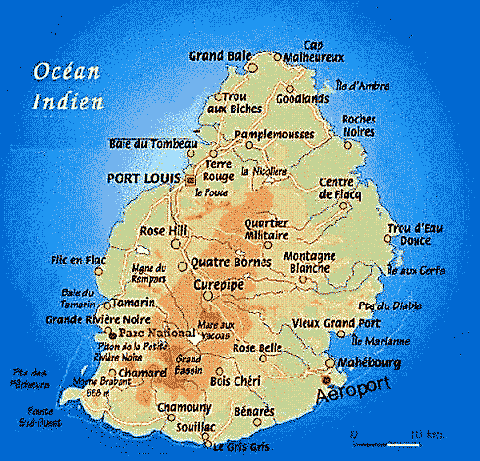

Năm giờ sáng hôm đó, thủy thủ đứng gác thông báo: "Đất liền!" Người ta đã nhìn thấy đỉnh núi Table.
Suốt ngày hôm đó, gió thuận khiến các con tàu chạy với vận tốc mười hai mười ba dặm một giờ. Người ta vượt qua mũi Hải Vọng. Đến mũi Anguilles đuôi tàu bị một cơn gió mạnh đẩy nhanh đến về phía đông và ngay hôm đó, họ đã nhận ra đỉnh núi tuyết.
Đảo Maurice, thời đó vẫn mang tên là đảo Pháp là nơi duy nhất các tàu Pháp có thể lưu trú trên Ấn Độ Dương.
Vào năm 1505, Emmanuel, vua Bồ Đào Nha quyết định lập một phó vương quản lý vùng bở biển Ấn Độ. Vị trí này về sau giao cho François d'Almeida, người này bị sát hại năm năm sau gần mũi Hảo Vọng do bàn tay của những người Hottentots lúc ông muốn qua châu Âu.
Ngay những năm đầu cai trị của Almeida, khi Pedro Mascarenhas phát hiện ra đảo Pháp và đảo Bourbon (Đảo Réunion), người ta không nhớ ra rằng người Bồ Đào Nha không hề đặt cơ sở nào trên các đảo này. Trong suốt thời kỳ họ làm chủ, tức là trong suốt thế kỷ XVI nguồn lợi duy nhất thiên nhiên ban tặng cho đảo thu hút các khách lạ đến thăm là vài bầy dê, khỉ và lợn mà những người này thả trên đảo. Đến năm 1598, hòn đảo bị bỏ hoang rơi vào tay người Hà Lan.
Nước Bồ Đào Nha chuyển sang thời trị vì của vua Philippe Đệ nhị, những người Bồ Đào Nha sống lưu vong ồ ạt di cư sang Ấn Độ. Bị coi như bị tước mất tổ quốc mẹ hiền, một số trở thành người tự do, số khác làm nghề cướp biển và không có liên hệ hay phục vụ gì cho triều đình.
Hồi năm 1595, Comélius Houtman đã từng đặt nền móng cho sự phát triển nơi đây. Dần dần, người Hà Lan tiến hành chinh phục các khu đảo trên Ấn Độ Dương trong đó có đảo Cerné và Mascaret.
Đô đốc Van Nock là người đầu tiên đến đảo Cerné năm 1598, khi đó nơi này vẫn chưa có dân cư sinh sống. Chuyến tàu buồm cũng đã rời Texel ngày 1 tháng Năm năm 1600 dưới sự chỉ huy của đô đốc hải quân Jacques-Comélius và kỳ hạn đó mang tên ông. Đô đốc còn được gọi là Maurice và sau này ông đặt tên đó cho đảo Cerné. Người Hà Lan chỉ biết tên đảo chứ chưa đến. Sau đó, họ hạ hai xà lan vào bờ để xem xét. Một chiếc vào rất sâu và phát hiện được một cảng lớn có độ sâu tuyệt vời, nó có thể chứa năm mươi kỳ hạm. Buổi tối, các thủy thủ trở lại tàu độ đốc mang về rất nhiều chìm lớn và vô số chim nhỏ. Ngoài ra họ còn phát hiện một dòng sông chứa nước ngọt chảy từ đỉnh núi xuống.
Tuy thế, đô đốc còn không biết đảo này có người sinh sống hay chưa, mặt khác, ông cũng không có thời gian đi thám thính bởi lẽ trên tàu đang có rất nhiều bệnh nhân. Ông đành cho tàu cập vào một vị trí thuận lợi để tránh bị tấn công bất ngờ.
Trong nhiều ngày liên tiếp, ông cho các xà lan vào thăm dò các phần khác nhau trên đảo và xem trên đó có ai sống hay không, những các tốp người đi về đều kể lại chỉ gặp những con thú tứ chi chạy trốn trước họ, những con chim vốn biết quá ít nguy hiểm nên đứng in chẳng sợ bị bắt. Tuy nhiên, có một mảnh ván cầu, một cột buồm phụ trên đó minh chứng cho vài thảm hoạ thiên nhiên đã ập xuống khu vực quanh đảo Cerné.
Điều khiến hòn đảo này trở thành một trong nhũng nơi kỳ thú đẹp đẽ nhất mà người ta có thể thấy là sự hiện diện các đỉnh núi quanh tất cả các bờ biển. Núi nào cũng dày đặc các loại cây xanh chằng chịt, có cây tuyết phủ quanh năm trên các cành. Mặt đất sỏi đá cũng phủ lớp rừng rậm đến độ không tạo được đường đi. Người ta nhận ra ở đó có nhiều loại cây đen giống như các cây gỗ mun đẹp nhất, nhiều loại cây có màu đỏ sặc sỡ, nhiều loại có màu vàng sậm như màu xi, những cây cọ nhiều vô kể đang xoè bóng mát gọi mời, lõi của nó ăn ngon như củ cải và có thể ăn cùng với nước sốt mà người ta ăn với loại rau đó. Chất gỗ mọc trên đảo cũng rất tốt nên các thủy thủ có thể dựng lều thuận tiện cộng với không khí trong lành đã khiến các bệnh nhân mau khoẻ trở lại. Mặt khác, biển ở đây có rất nhiều cá. Chỉ một mẻ lưới người ta có thể thu về hàng ngàn con. Một hôm, người ta bắt được con cá đuối lớn đến mức có thể làm thức ăn cho cả thủy thủ đoàn.
Những con rùa ở đây to đến độ, vào một ngày giông, người ta tìm được sáu người đàn ông nấp dưới một cái mai.
Chỉ huy tàu ra lệnh đóng một tấm ván lên trên một cái cây, trên đó ông cho khắc tên quân đội Hà Lan, Zélande và Amsterdam, kèm dòng chữ bằng tiếng Bồ Đào Nha Christianos Refomlados. Sau đó, ông còn cho dựng một hàng rào, cho trồng các loại rau khác nhau để thử đất cũng để lại đó một số gia cầm để các tàu dừng chân trên hòn đảo xinh đẹp này về sau có được những thực phẩm phong phú ngài nguồn thực phẩm bản địa.
Ngày 12 tháng Tám năm 1601, Hermansen cho người lên đảo Maurice để lấy nước và thực phẩm đang thiếu trên tàu.
Có lẽ vào năm 1606, người Hà Lan đã đến thăm đảo Pháp nhưng trước năm 1644, họ chưa xây dựng gì ở đây. Thật khó xác định ai là người đặt cơ sở đầu tiên trên đảo, có lẽ đó là những cướp biển hoành hành trên Ấn Độ Dương vào thế kỷ thứ XVI.
Tất cả những gì chúng ta biết, đó là vào năm 1648, Van der Master trở thành đảo trưởng đảo Maurice. Tiếp đó là Leguat và ngài Lameocius trở thành chúa đảo khi ông Leguat đến đảo Rodngues. Cuối cùng vào năm 1690, Rodolphe Déodoti từ Genève chiếm vị trí này nhân chuyến trở về từ đảo Rodngues
Từ năm 1693 đến năm 1696, một vài người Pháp mệt mỏi với không khí
Ban đầu họ sống bằng cá, gạo, rùa, các loại rau nhưng về sau biết nuôi các loại gia súc gia cầm nên cuộc sống của họ bình yên và địu ngọt như trên mảnh thiên đàng rớt xuống trái đất.
Có bốn gã cướp biển người Anh là Avery, England, Condon và Patisson, sau khi kiếm được vô số tài sản trên biển đó, bờ biển A Rập và Ba Tư, họ lập tại đây một phần đoàn thủy thủ của mình.
Vua Pháp không kết tội họ và một trong số những kẻ thám hiểm đó còn sống đến năm 1763 trong khi triều đình Bourbon hãnh diện về lần đặt tên mới cho đảo Bourbon đã thúc đẩy nó phát triển thì Maurice trong tay người Hà Lan lại dậm chân tại chỗ.
Ngày 15 tháng Giêng năm 1715, thuyền trưởng tàu Dufresne nhân lúc người Hà Lan sẵn sàng bỏ một đảo Maurice, đã cho khoảng ba mươi người Pháp lên đây và đặt lại tên cho đảo này là đảo Pháp. Trước vẻ thịnh vượng của hai hòn đảo, sự tiện lợi của cảng biển, đất đai phì nhiêu, không khí trong lành đã nảy ra trong ông ý tưởng biến nơi này thành thuộc địa thật sự. Ngài Bauvillier, vào năm 1721 đã có hiệp sĩ Gamier de Fougeray, tức thuyền trưởng tàu Triton đến đó, người này lãnh đạo nó từ ngày 23 tháng Chín nhân danh Vua nước Pháp và cho chôn một cột buồm cao bốn mươi dặm trên đó treo một lá cờ trắng cùng dòng chữ la tinh.
Ngày 28 tháng Tám năm 1726 ông Dumas đang sống trên đảo Bourbon được bổ nhiệm quản lý cả hai đảo. Sau này, việc quản lý lại bị chia cắt và ông Maupin được giao quản lý đảo Pháp.
Nhưng người thành lập và thực thi luật trên đảo lại là ngài Mahé de La Bourdonnais. Vừa đến miền đất mới, ông nhận ra toà án bên đảo Pháp phụ thuộc vào đảo Bourbon, ông bèn gửi chứng thư tuyên bố quyền tương đương trên đảo Pháp với đảo lân cận về tất cả những gì liên quan đến luật tội phạm.
Dẫu vậy trong suốt mời một năm cầm quyền của ngài Bourdonnais, cái quyền bình đẳng ấy chẳng được sử dụng đến bởi lẽ trên đảo Pháp chẳng hề có vụ án nào. Thảm hoạ duy nhất làm Maurice tổn thất là việc ra đi của người lai da đen vàng. Ngài Bourdonnais cho thành lập một đội quản hạt bao gồm những người da đen thực thi những gì áp đặt đối với những người da đen bướng bỉnh. Ông cho trồng mía trên đảo Pháp và thành lập tại đây những xưởng bông và công việc sản xuất này có đầu tiêu thụ là Surate, Moka, Ba Tư và châu Âu.
Những cơ sở sản xuất đường do ngài Bourdonnais thành lập khoảng năm 1735, sau mười lăm năm đã tạo ra một khoản sáu nghìn phăng mỗi năm. Ông cho nhập cây sắn từ Braxin và
Vào năm 1737, ngài Bourdonnais đã cho người thực hiện việc đóng tàu ông cho làm những ca nô và xà lan lớn để vận chuyển vật liệu. Cuối cùng, ông đã dựng được một tàu đánh cá lớn rất tuyệt vời. Năm sau, ông cho đóng hai con tàu khác và thực hiện trong xưởng một con tàu 500 tấn.
Những việc ông làm thuận lợi đến nỗi những kẻ ghen ghét không để ông yên. Thế là ông trở về
Sự việc trở nên thật dễ dàng, ông đã xua tan bóng mây đen đè lên tiếng tăm của mình. Vì đã chuẩn bị tinh thần cắt đứt với người Anh và Hà Lan trong tương lai, ông lập kế hoạch trang bị vũ khí cho lượng tàu nhất định để tấn công việc buôn bán của hai kẻ thù hùng mạnh này. Tuy nhiên, dù đã được chuẩn y nhưng kế hoạch đó không được thực hiện và ông phải trở về
Hoà bình lập lại năm 1742, ngài Bourdonnais tiếp tục trở về đảo Pháp một lần nữa, những lời tố cáo buộc ông quay về
Lần này ông gặp ngài Poivre ở Pondichery. Con người này đã mang về Pháp hạt tiêu, quế và nhiều loại cây gỗ có vân. Chính ngài Poivre này vào năm 1766 đã được công tước
Sau những chuỗi thành công của các quản hạt người đã đặt tảng đá xây dựng nền móng chốn thuộc địa mỹ lệ này, đến lượt tướng Decaen đã tiếp nhận hòn đảo từ tay ngài Magallon-Lamorìière trong thời kỳ đảo đang mức hưng thịnh nhất.
Chỉ có điều song song với việc nhận hòn đảo ấy, cuộc chiến với nước Anh lại bùng nổ. Từ khi cuộc chiến bắt đầu, như chúng tôi đã nói ở trên, đảo Réunion và đảo Pháp là nơi cư trú duy nhất cho các tàu Pháp trong Ấn Độ Dương. Đó cũng là nơi các thuyền trưởng Surcouf, nhà Hermitte, Dutertre đến bán chiếm lợi phẩm hay sửa chữa tàu thuyền. Do đó, hiếm khi người ta không thấy vài tàu Anh đi ngang qua đây chờ tàu cướp biển để lấy lại tài sản của họ.
Thuyền trưởng Surcouf ngạc nhiên chạy lên boong tàu Revenant khi nghe tiếng hô "Đất liền" ông leo hẳn lên thanh buồm vẹt và thấy mặt biển thông từ cảng Savanne đến mũi Quatre-Cocos.
Chỉ có điều ông không biết liệu có tàu Anh nào nấp trong đất liền lao ra từ bờ vịnh Tortue và vịnh Tamarin hay không.
Thuyền trưởng Surcouf đã từng đặt chân đến Địa đàng Ấn Độ này, nói theo cách của pháp quan Suffren, đã nhận ra đảo Pháp ngay qua làn hơi nước bao phủ quanh năm trên hòn đảo xanh tươi, rặng núi Créoles ( Créole là tên của những người sanh trưởng ở tại các quần đảo Maurice hay đảo Réunion) và chúng con kênh từ cảng lớn kéo đến dãy núi Bambous.
Khi người ta đến đảo Pháp chỉ để neo đậu, lấy lương thực, nước ngọt đôi khi người ta lưỡng lự không biết chọn cảng Lớn hay cảng Louis. Còn nếu người ta đến đây với mục đích như Surcouf tức là sửa chữa tàu hay bán chiến lợi phẩm thì không cần phải băn khoăn. Lối vào cảng lớn rất dễ dàng do có luồng gió mạch uốn cong các cây trên đảo, từ đông sang tây giống như gió mùa Mistral (Ở các đảo này thường hay bị bảo Mistral tàn phá hằng năm) bẻ cây cối của chúng ta ở miền nam. Loại gió này ngự trị suốt chín tháng trong năm và các tàu thuyền vào cảng thì dễ còn khi đi ra nếu có gió thì không thể ra được.
Thuyền trưởng Surcouf sau khi nhận thấy biển thông thoáng, ông định hướng mũi Pointe-Du-Diable, quay đầu lên đông bắc để tránh bãi ngầm, bỏ lại sau lưng những đồng cỏ xa van, bên trái là dãy núi Blanches, mỏm núi Faience và toàn bộ tảng Flacq.
Các con tàu đều buông neo tại Pavillon để nhận sự chào đón và kiểm tra y tế theo tín hiệu. Việc cho phép vào cảng được chuẩn bị theo thủ tục tự do, thông thường sẽ có nhiều thuyền nhỏ mang hoa quả và đủ loại sản phẩm tươi. Sau các thủ tục, Surcouf được chào đón, cho phép đi tiếp để buông neo ở Chien-Au-Plomb, nhưng trước khi đến đó, tên của ông được những người chèo thuyền truyền từ thuyền này sang thuyền khác, nó đánh thức trong họ những hồi ức đẹp nhất về tổ quốc, thế là những tiếng hò reo vui sướng và những tràng pháo tay rộ lên chào đón tàu Standard, Revenant và Tay đua New York.